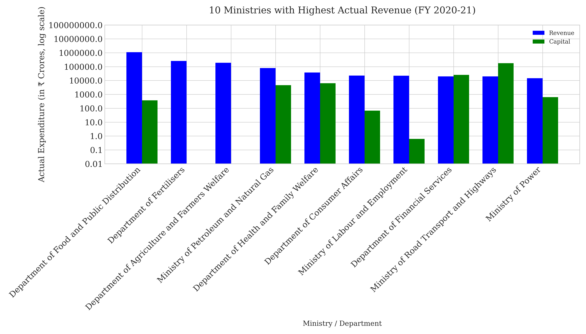
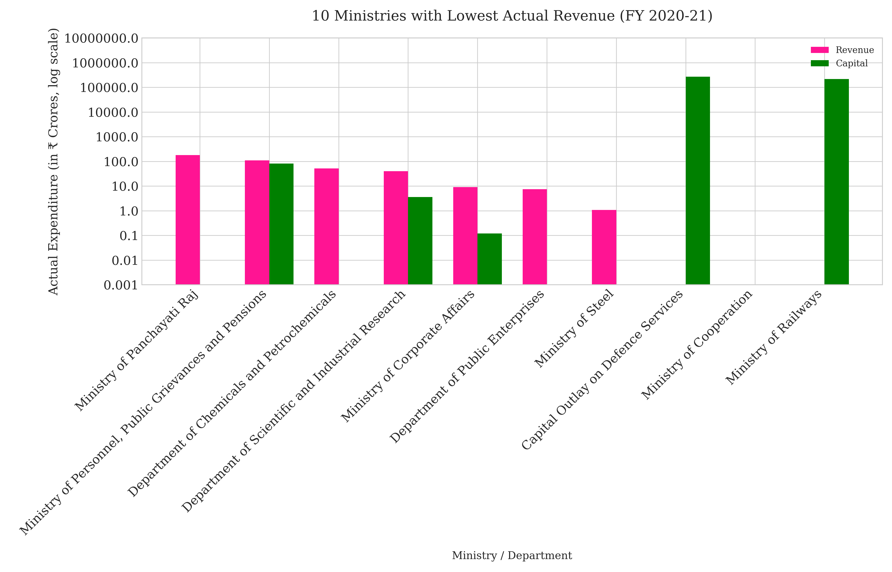
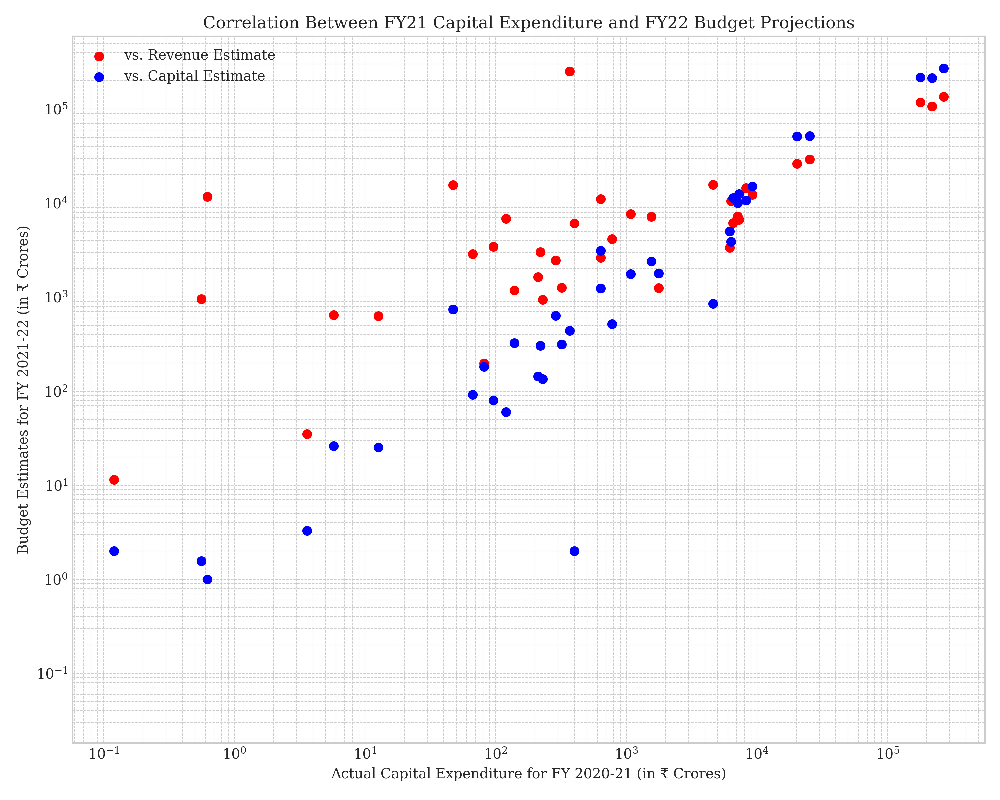
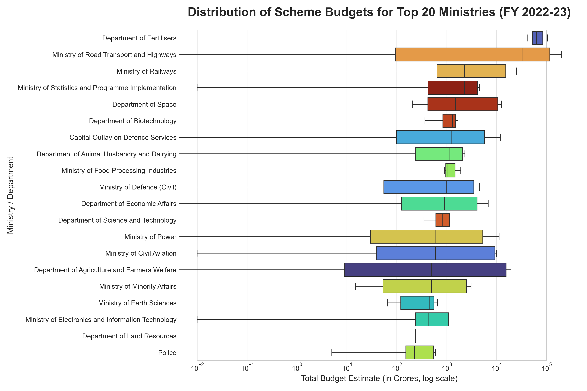
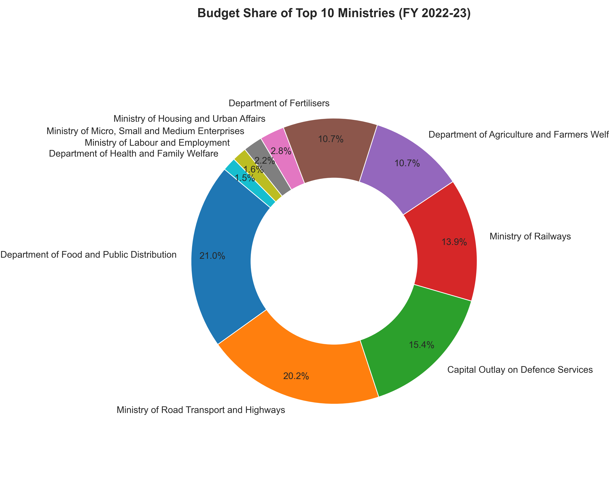

Top 10 schemes by revenue, 2020–21
Consumer Affairs (26.9%), Railways (17.5%) and Defence (17.0%) account for 61.4% of the total, with a sharp drop after the top three.

Lowest 10 schemes by revenue, 2020–21
Most ministries spend more on running costs than on capital. Railways and Defence Services are the capital-heavy exceptions, and a log scale shows how widely spending differs.

Capital spending and the next budget
Ministries that spent more capital in FY21 tended to get larger allocations in FY22. The link is stronger for capital than for revenue budgets, and the values span about seven orders of magnitude.

How scheme budgets vary, FY 2022–23
Road Transport and Agriculture show the widest spread across their schemes, while ministries such as Space and Biotechnology look steady and tightly grouped.

Budget share of the top ministries, FY 2022–23
Food & Public Distribution (21.0%) and Road Transport (20.2%) together cover over 41%, followed by Defence (15.4%) and Railways (13.9%).